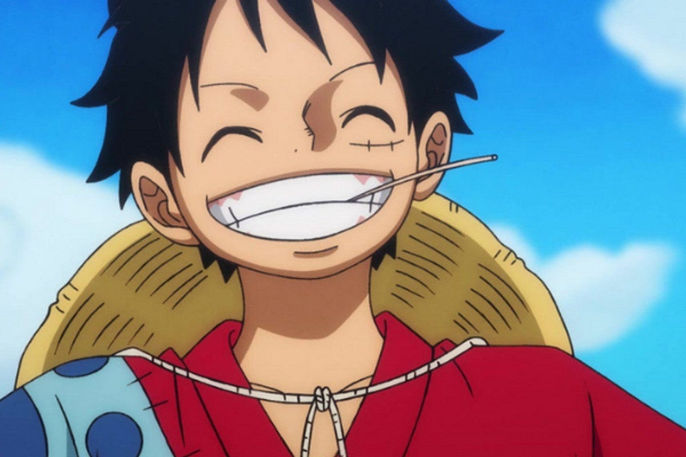

The most Inspiring Fictional Charachter of history!Monkey D. Luffy
Monkey D. Luffy is the main protagonist of the popular manga and anime series "One Piece," created by Eiichiro Oda. While Luffy may not fit the traditional mold of a business entrepreneur, he embodies several qualities and characteristics that can serve as inspiration for entrepreneurship and leadership. Let us look at some of the entreprenurship qualities, which Luffy embodies in us:
Determination and Ambition: Luffy's dream is to become the Pirate King by finding the legendary treasure, One Piece. His unwavering determination and ambitious pursuit of his goal showcase the importance of having a clear vision and staying committed to achieving it, a crucial aspect for any entrepreneur.
Fearlessness and Risk-Taking: Luffy fearlessly takes on challenges, often confronting powerful foes and navigating treacherous waters. Entrepreneurs, too, must be willing to take calculated risks, face uncertainties, and step out of their comfort zones to achieve success.
Adaptability and Creativity: Luffy encounters various obstacles and adversaries throughout his journey. His ability to adapt to different situations and come up with creative solutions reflects the entrepreneurial quality of adaptability. Entrepreneurs need to be flexible and innovative in response to the ever-changing business landscape.
Leadership and Inspiring Others: As the captain of the Straw Hat Pirates, Luffy leads by example and inspires his crewmates with his actions. Entrepreneurs, too, need to demonstrate leadership qualities, inspire their teams, and foster a positive and motivated work environment.
Building Strong Teams: Luffy surrounds himself with a diverse and skilled crew, the Straw Hat Pirates. Successful entrepreneurs understand the importance of assembling a competent and cohesive team to complement their strengths and compensate for weaknesses.
Persistence and Resilience:Luffy faces numerous setbacks and challenges, but his resilience and persistence drive him to keep moving forward. Entrepreneurs often encounter failures and obstacles, and Luffy's ability to bounce back serves as a reminder that resilience is a key factor in entrepreneurial success.
Loyalty and Friendship: One of Luffy's defining characteristics is his loyalty to his friends and crew, the Straw Hat Pirates. He places a high value on friendship and is willing to go to great lengths to protect and support his comrades. This loyalty underscores the significance of strong relationships in both personal and professional life.
Learning from Failure: Throughout his journey, Luffy faces numerous setbacks and failures. However, he views these experiences as opportunities to learn and improve. Embracing failure as a stepping stone to success is a valuable lesson for entrepreneurs navigating the unpredictable landscape of business.
Kindly wait for more reviews on other fictional charachters!